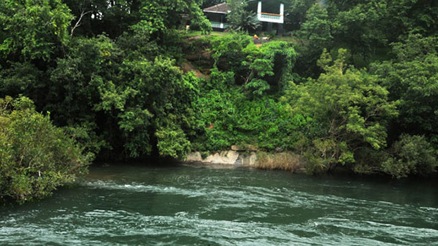
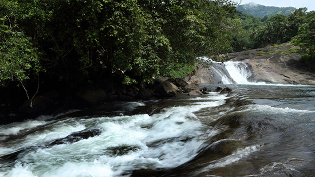

Enclosed by the Nilgiris in the east and the Arabian Sea on the west, Malappuram is a prominent district in Kerala which is commonly known as "the land on the hilltop."
With ancient monuments, natural spectacles, and the meandering rivers, Malappuram is a blend of history and heritage. Home to the Zamorins of Kozhikode and legendary poets, writers and artists; the culture and traditions of this region are unmatched. It is an important religious centre for Hindus and Muslims as well.
On your visit to Malappuram, make sure to experience the Thirumandham Kunnu Pooram festival, which is a cultural feat and attended by countless devotees around Kerala. With historical monuments, natural wonders, aesthetic art forms and traditional cuisine, Malappuram is replete with all that a traveller could wish for.
Established in 1994, Nilambur Teak Museum is the first teak museum in the country. They have a collection of information in the form of articles and comprehensive documents that also mention the historic and artistic value of the wood.

Kottakkunnu is a mesmerising garden situated on a hill. Its beauty is often compared with the picturesque Marine Drive in Mumbai. The attraction has a Water Park, an Adventure Park, an Art Gallery, 16D cinema, an Open Air Theatre and a Balloon Park. These amusements make Kottakkunnu a perfect picnic spot.
It is one of the major attractions of Malappuram and houses more than 100 species of birds, making it a haven for nature lovers. Around 60 varieties of migratory birds come to the sanctuary every year. If you visit the sanctuary between October and March, you can spot many types of migratory birds such as sand pipers, green shanks, terns, sea gulls and more.The sanctuary is located at a height of 200 m above sea level and offers great views of the river and the Arabian sea.